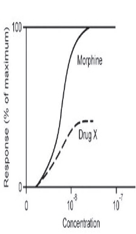

A pharmaceutical company develops a new opioid drug (Drug X) that binds to the same receptor as morphine does. Drug Xis compared with morphine to test its analgesic effect. The graph shows the log dose- response curves for morphine and Drug X Based on these results, which of the following best describes Drug X? ,, E ·x
Explanation & Educational Objective
Partial agonists are drugs that bind to and activate a receptor at the same site as a full agonist but have decreased efficacy relative to the full agonist. In this case, Drug Xis a partial agonist that binds to the same opioid receptors as mo[JPhine(mu, delta, and kappa), and exhibits a similar effect However, its efficacy is reduced, and thus it never reaches the same percentage of maximum response as morphine. This is the mechanism of action of buprenorphine at mu-opioid receptors, which can be used to treat opioid use disorder or chronic pain because of its long half-life and decreased risk for withdrawal. Buprenorphine is occasionally dosed in combination with naloxone, which is not absorbed orally but is absorbed if the medication is injected intravenously. This causes the opioid effect to be negated if the medication is not taken as prescribed. Incorrect Answers A, 8, C, and D. A competitive antagonist (Choice A) directly competes with an agonist for a receptor binding site, blocking its action. The competitive antagonist can be overcome by increasing the concentration of agonist to achieve full efficacy. A competitive antagonist would not typically result in a similar response as the direct agonist, as can be seen in the graph; rather, it affects the response of the direct agonist (in this case, morphine) when co-administered. A full agonist (Choice 8) leads to the same maximal response as an agonist at the receptor site It would be expected to reach the same maximum response as morphine, rather than be less efficacious An inverse agonist (Choice C) binds to the same receptor site as a full agonist, but with the opposite effect of the full agonist. This is in contrast to a competitive agonist, which inhibits the efficacy of the response but does not cause the reverse effect. An inverse agonist would be expected to decrease the percentage of maximum response. A noncompetitive antagonist (Choice D) inhibits the effect of an agonist through binding at a different site. Since it does not directly compete with the agonist, the inhibitory effect cannot be overcome by increasing the concentration of the agonist. A noncompetitive antagonist would prevent morphine from reaching its maximum efficacy when co-administered but would be unlikely to cause any change in response individually.
Partial agonists act at the same binding site as full agonists, though with decreased efficacy. This is the mechanism of action of buprenorphine at mu-opioid receptors, which can be used to treat opioid use disorder or chronic pain because of its long half-life and decreased risk for withdrawal.